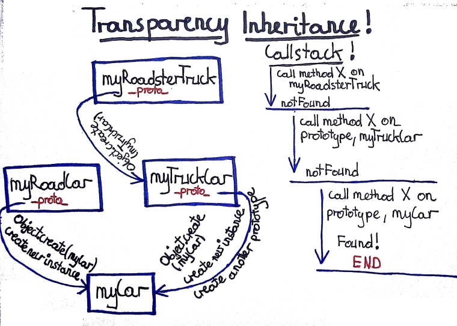

Po co zaczynać zawsze od początku? Po co uczyć się tego co w większości jest podobne?
Skoro znasz to co zawsze jest na początku, zacznij od tego co najbardziej różne. Zacznij od cech charakterystycznych
Ciało to jak zawsze coś materialnego, namacalnego coś co z wiekiem się zużywa. Dusza niezależnie od wieku pozostaje wiecznie młoda.
Z tego związku dzieci nie będzie.
Sprawić aby tak doświadczeni programiści, znający kilka języków, mający wiele lat doświadczenia chcieli zainteresować się tym językiem przez małe “j” - bezcenne.
Może będziecie musieli może nie. Może za rok będą takie super narzędzia że nie będzie to konieczne. Będą robić wszystko za Nas.
Rozumiejąc to co złe i dobre w jednym języku, pomaga nam szukać dobrych rozwiązań w innym. Potraktujcie javascript jako “pretekst”, tak jak np. zabawkę do nauki tabliczki mnożenia. Poznając ten prosty język zobaczycie jak wiele zagadnień staje się bardziej klarownych.
Odwołajmy się do doświadczenia pokoleń programistów. Przypomnijmy sobie jak ono się zmieniało i zobaczmy gdzie teraz jest javascript.
Zobaczmy czy javascript mimo swojego wieku dotrzymuje kroku współcześnie mainstremowym językom kroku.
Doświadczenia kilku pokoleń programistów uczą że im mniej coś skomplikowane tym lepiej.
var jez = {
waga: 100,
wiek: 7,
szybkosc: 10,
iloscJablekNaKolcach: 3,
oczy: piwne,
jedzTaKure: function() {},
dzgnijKolcem: function() {}
};
Od wielu już lat poprzez takie języki jak C++, java, C# czy nawet Ruby głównym sposobem tworzenia kolejnych instancji obiektów są klasy.
Ksiądz, normalnie dobry i uczciwy, niestety z czasem łasuch kościelnej tacy (złodziej). W rzeczywistości ten sam obiekt ma dwie odmienne funkcje. W kodzie nie łamiąc SRP było by nie możliwe stworzenie klasy która jest księdzem i złodziejem w jednym.
Z matematycznego punktu widzenia każdy kwadrat jest prostokątem, dlatego z punktu widzenia geometrii kwadrat jak najbardziej dziedziczy po prostokącie. Co się jednak stanie kiedy nadpiszemy w kwadracie długość i szerokość tak aby wskazywały na jedno pole (jedno ramie kwadratu) i będziemy chcieli policzyć pole?
def client_of_rectangle(rectangle)
rectangle.width = 5;
rectangle.height = 4;
raise "Bad area!" if rectangle.Area() != 20
end
client_of_rectangle(rectangle) \\ok
client_of_rectangle(square) \\rais exeption
Kwadrat naruszył “kontrakt” klasy prostokąt. Problem w tym że nie naruszył samego kwadrata.
The validity of a model can be expressed only in terms of its clients.
Zapomnijmy na razie o tym co wiemy o tworzeniu obiektów. Wróćmy do tego na czym twórcy języków się wzorowali. Do przyrody.
Czy w przyrodzie osobnik X powstaje z jakieś wydmuszki (klasa)?
Nie! Powstaje z innego w pełni „funkcjonalnego” osobnika.

var myOffRoadCar = Object.create(myCar);
myOffRoadCar.name = "My off road car, its not prototyp, it can be, but now not nessesery";
myOffRoadCar.sound = "road hrrr szrr"; // should overide mycar sound.
myOffRoadCar.fireSecondWheelDrive = function(){
console.log("second wheel drive has been fired");
};
myOffRoadCar.startDrive(); //Should log raod hrrr szrr instand of brum
var myTruckCar = Object.create(myCar);
//Differances only
myTruckCar.name = "My track has become truck prototype ";
myTruckCar.sound = "hrrrrr plum";
myTruckCar.containerType = "long";
myTruckCar.cargoType = "wood";
myTruckCar.relaseCargo = function (){
console.log("cargo has been relased");
};
myTruckCar.startDrive();
myTruckCar.relaseCargo();
// aguments params.
var myRoadsterTruck = Object.create(myTruckCar,{
name: {
value: "My beautiful truck",
writable: true,
configurable: true,
enumerable: true},
containerType: {value: "short"}
});
myRoadsterTruck.startDrive(); // it has not have its own sound so shoud get from myTruckCar.
// It will be not needed i my shiny new truck :)
myRoadsterTruck.cargoType = undefined;
myRoadsterTruck.relaseCargo = undefined;
Nie potrzebujemy dodatkowej abstrakcji jaką jest klasa.
Czy tworzymy kolejny obiekt czy grupę obiektów jest to dla nas to samo - przeźroczyste.
Delegując automatycznie rozwiązuje nam problem z złym dziedziczeniem klasy domenowej po klasie narzędziowej. Brzmi znajomo?
Przykład mixin w rubim:
module Printable
def print_to_pdf
puts "Text as pdf: #{self.details}"
end
def print_to_html
puts "Text as html: #{self.details}"
end
def print_to_csv
puts "Text as csv: #{self.details}"
end
end
class Invoice
include Printable
attr_accessor :details
end
tv_invoice = Invoice.new
tv_invoice.details = "tv invoice for march equal 120 pln"
tv_invoice.print_to_pdf if tv_invoice.respond_to? 'print_to_pdf'
mobile_invoice = Invoice.new
mobile_invoice.details = "mobile invoice for april 89 pln"
mobile_invoice.print_to_csv if mobile_invoice.respond_to? 'print_to_csv'
Przykład zmiksowania w javscript:
var printable = {
printToPdf: {
value: function()
{
console.log("Text as pdf: " + this.details);
}
},
printToHtml: {
value: function()
{
console.log("Text as html: " + this.details);
}
},
printToCsv: {
value: function(){
console.log("Text as csv: " + this.details);
}
}
};
// Invoice maker like constructor but without "new".
var invoiceMaker = function()
{
var _details;
var _proto = {};
Object.defineProperties(_proto, printable);
var _that = Object.create(_proto);
_that.details = _details;
return _that;
};
tvInvoice = invoiceMaker();
tvInvoice.details = "tv invoice for march equal 120 pln";
if(tvInvoice.printToCsv !== undefined) tvInvoice.printToCsv();
mobileInvoice = invoiceMaker();
mobileInvoice.details = "mobile invoice for april 89 pln";
if(mobileInvoice.printToHtml !== undefined) mobileInvoice.printToHtml();
Generalnie jeden kod i drugi robi to samo - deleguje pewne cechy do obiektów, do nowych instancji obiektów.
Piszemy system gdzie mamy jakiegoś Murzyna. Murzyn biega, skacze ... Za jakiś czas musimy dorobić Żółtka. Robi prawie to samo tylko woli ryż od bananów. Chcielibyśmy wydzielić to co ich łączy. Jeśli to co ich łączy ma swoją rolę w domenie wydzielmy to do czegoś co nazwiemy Human (klasa, obiekt). Jeśli nie ma roli w domenie po prostu zróbmy abstrakcje Humanable w js zwykły obiekt.
Mixin w rubim czy javscript wydaje się radzić super jeśli chodzi o zasady DRY czy SRP. Ponad to jest prosty i zgodny z naturą obu języków.
Rozszerzenie klasy za pomocą mixin o ile zapobiegnie przypadkowy złego dziedziczenia po klasie narzędziowej o tyle nie poradzi sobie ze wspomnianymi przypadkami księdza czy kwadrata.
Czy to coś zmienia? Zasadniczo kodu w rutime (w pamięci programu) nie dotyczy SRP nie musimy go utrzymywać. Jeśli chcemy księdza mamy księdza jak chcemy złodzieje mamy złodzieja. To samo z kwadratem. Tutaj po prostu figura raz będzie prostokątem raz kwadratem.
/
#